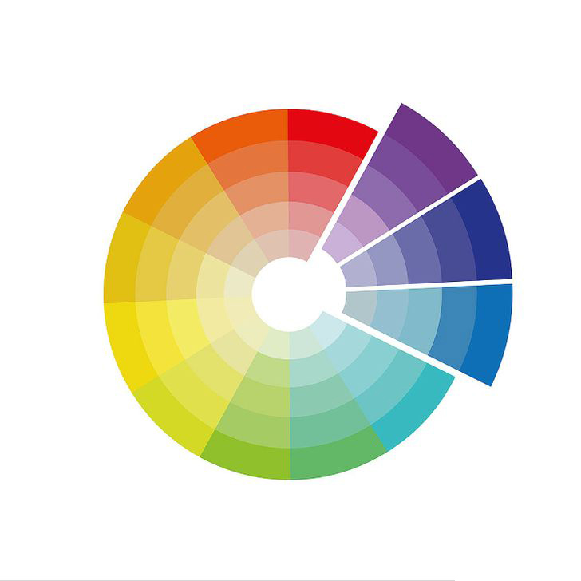
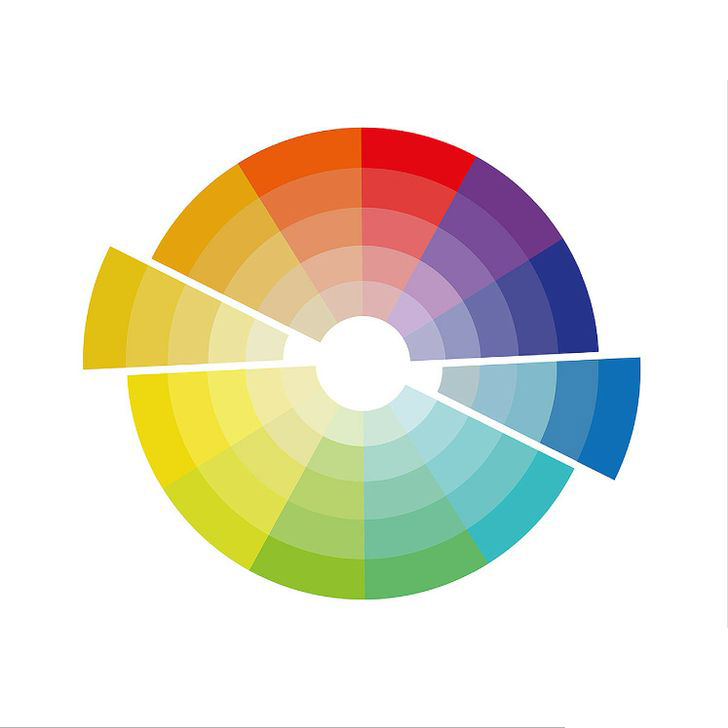
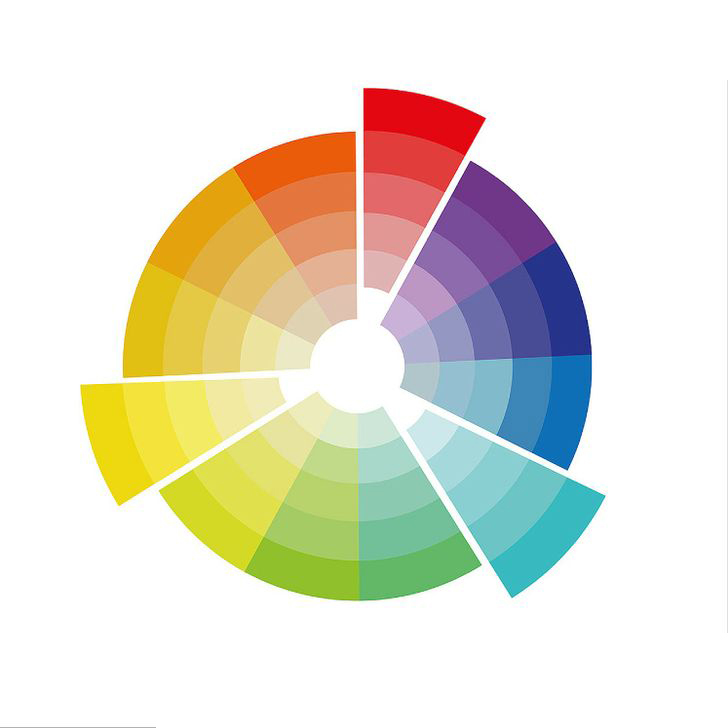

En las webs La importancia de la tipografía por que define al gerarquia visual y la interficie de usbold, regular.
RGB: Red, Gren, Blue. Digital representations of images are generally produced using light in the RGB color model. RGB is a light additive color model, meaning that colors have to be added together to produce lighter colors and ultimately white.
Monocromatico

Análogo

Complementario

Triádico
Adobe Color CC
Microsoft color system
Color primario secundario y terciario
Paletas de colores
via www.lancetalent.com
via www.lancetalent.com
via www.lancetalent.com
via www.lancetalent.com
via www.lancetalent.com
via www.lancetalent.com
via www.lancetalent.com
via www.lancetalent.com
Colores principales y secundarios
Christelle Mozzati bia www.dribbble.com
Llamada a la acción Hay ciertos colores que hay que utilzarlos con cuidado, ya que cinllevn un significado en si mismo.